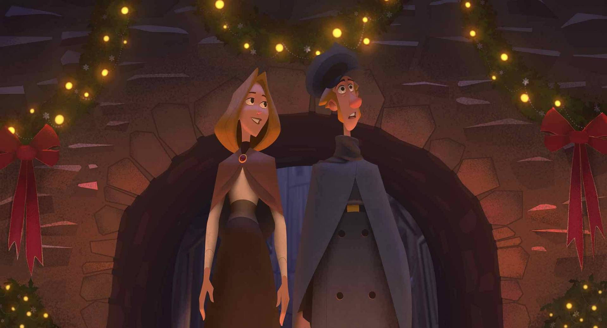

2019 Oscar Predictions
Few surprises are expected for surprisingly competitive categories as Academy voters continue to disappoint
By Carson Zhang

An annual PSA that always bears mentioning: the Oscars are dumb, but they aren't irrelevant or unimportant. Along with box office results and critical reception, they ultimately decide which films continue to get made and which get axed. They're the reason why there's a couple of biopics every year where an actor gives a "transformative" performance largely defined by the makeup team. The Oscars often stick to bland, formulaic films that vanish from public discourse almost instantly, which is why studios continue to vomit unchallenging content like Green Book and Shakespeare In Love. However, every year there's usually a couple of truly impressive films that get recognized by the Academy. When a movie like The Hurt Locker, a commercial flop in spite of its creative achievements, takes top honors from Avatar, an average film that demolished box office records, it encourages studios to invest in more niche, daring ideas in order to win Oscars. When a good movie wins at the Oscars, it's a major step forward for the industry.
Another PSA that also bears mentioning around awards season: the Academy is an association of old white guys slowly being swarmed by diversity. (No political statement here, that is just how it is don't attack me.) That's why 1917 is the clear frontrunner and Parasite is on its heels. Bombastic performances and imitations of real people will usually triumph against better performances, Allison Janney's 2017 triumph over Laurie Metcalf being an obvious demonstration of that. 2017 is particularly worth mentioning this year, because this is only the second time in history since then that the acting winners of the Golden Globes, Screen Actors Guild, Critics' Choice, and BAFTAs have all lined up. Which means that the acting categories are basically locked. However, everything else seems sort of on the table as precursors split fairly evenly between competitors. Since I never get what I want, though, I'm just going to assume the Academy disappoints me at every turn for these predictions. Solid strategy. Also, I'm skipping Documentary and all Short Film categories because I have no idea what goes on for those. Confident I'll be around 55% right and edge out my physics exam.
Best Actor

The list of nominees:
Antonio Banderas (Pain and Glory)
Leonardo DiCaprio (Once Upon A Time In Hollywood)
Adam Driver (Marriage Story)
Joaquin Phoenix (Joker)
Jonathan Pryce (The Two Popes)
Prediction: Joaquin Phoenix (Joker)
Upset: Adam Driver (Marriage Story)
There's no doubt Phoenix will win this award. He's already been robbed of several wins and nominations, his campaigning has been full of liberal activism, and he's the only reason that Joker (which leads the nominations at 11) is in the conversation at all. The only others on his level in this category are Banderas and Driver. They won't award Banderas for such a subtle performance, and Marriage Story never picked up the traction it needed to win anything.
Best Actress

The list of nominees:
Cynthia Erivo (Harriet)
Scarlett Johansson (Marriage Story)
Saoirse Ronan (Little Women)
Charlize Theron (Bombshell)
Renée Zellweger (Judy)
Prediction: Renée Zellweger (Judy)
Upset: Charlize Theron (Bombshell)
Erivo is lucky to be nominated, so she's not happening. Ronan is likely going to take the Kate Winslet route to her own Oscar, which means she won't be winning anytime soon. Johansson is a double nominee which bodes well for her, but the lack of support for Marriage Story is not promising. Theron is the closest to an upset thanks to the physical transformation, but Judy is Zellweger's big return to Hollywood. Playing an adored Hollywood icon after years of being incognito, her narrative is pretty much unstoppable.
Best Supporting Actor

The list of nominees:
Tom Hanks (A Beautiful Day In The Neighborhood)
Anthony Hopkins (The Two Popes)
Al Pacino (The Irishman)
Joe Pesci (The Irishman)
Brad Pitt (Once Upon A Time In Hollywood)
Prediction: Brad Pitt (Once Upon A Time In Hollywood)
Upset: Joe Pesci (The Irishman)
Now this is a stacked category. I'd never think I'd live to see the day that Brad Pitt, one of our only remaining movie stars in an era of franchising, win an Oscar over four acting legends. His narrative is every bit as firm as Phoenix or Zellweger's, so it's happening. While he's actually won an Oscar for producing 12 Years A Slave, people only care about acting Oscars and he's got none of those yet. Plus, while Phoenix has been a picture perfect illustration of what the Oscars aspire to be this entire awards season, Pitt has been setting the trail ablaze by being Brad Pitt. He's been charming, funny, and self-deprecating through every awards speech, and a picture of him and ex-wife Jennifer Aniston together was worth billions in advertising. It helps that Hopkins and Hanks aren't in Best Picture nominated films, and that Pacino and Pesci will split votes. If those split votes end up in a victor, though, my money's on Pesci as the critical favorite.
Best Supporting Actress

The list of nominees:
Kathy Bates (Richard Jewell)
Laura Dern (Marriage Story)
Scarlett Johansson (Jojo Rabbit)
Florence Pugh (Little Women)
Margot Robbie (Bombshell)
Prediction: Laura Dern (Marriage Story)
Upset: Florence Pugh (Little Women)
I liked Pugh in Little Women much more than Dern in Marriage Story, but this is a loss I can take. Laura Dern's always good but she rarely ever wins awards, so she's definitely got the overdue narrative going for her. Also, as it turns out, the irritating opinions of Twitter folk do not actually translate to Academy votes. Based on some brief polling, everyone loves Dern and her performance. She gets a lot of scathing material that's much flashier than anyone else's in this category, so I'm certain she's gonna win. Also, like everyone in this category besides Bates, Dern has another movie up her sleeve: Little Women, where she actually gave a better performance. While Johansson seems like a reasonable second place considering Jojo Rabbit's strong showing, Pugh has that ingenue narrative going for her that voters love. And while Johansson has Marriage Story in her back pocket, Pugh has Midsommar. While many voters probably skipped it, those who didn't will definitely vote for the rising starlet.
Best Adapted Screenplay

The list of nominees:
The Irishman - Steve Zaillian
Jojo Rabbit - Taika Waititi
Joker - Todd Phillips and Scott Silver
Little Women - Greta Gerwig
The Two Popes - Anthony McCarten
Prediction: Taika Waititi (Jojo Rabbit)
Upset: Greta Gerwig (Little Women)
This category is awful. Like, Best Supporting Actress level awful. Zaillian has won no precursors, and neither have McCarten or Phillips and Silver. So, they're probably out. Gerwig got an early lead when Little Women began sweeping critic circles and took the Critics' Choice and USC Scripter awards, but Waititi snatched the edge with back-to-back wins at the Writers Guild of America and the BAFTAs. Those are much more valuable precursors, and Little Women will likely be dismissed by many voters for its decision to adapt the same novel an umpteenth time. Gerwig's narrative as a woman snubbed for Best Director works in her favor, but Jojo Rabbit's Editing nomination suggests much more favor for Waititi's Nazi comedy.
Best Original Screenplay

The list of nominees:
Knives Out - Rian Johnson
Marriage Story - Noah Baumbach
1917 - Sam Mendes and Krysty Wilson-Cairns
Once Upon A Time In Hollywood - Quentin Tarantino
Parasite - Bong Joon-ho and Han Jin-won
Prediction: Parasite - Bong Joon-ho and Han Jin-won
Upset: Once Upon A Time In Hollywood - Quentin Tarantino
I know I said I'd just assume the Academy would always pick what I didn't want, but I've got a little bit of hope for Parasite to take one big award on Oscar night. Tarantino won the Critics' Choice and Golden Globe, but he lost at BAFTA, a much more indicative precursor. And while he's ineligible at the Writers Guild of America, Parasite took a key win there. Baumbach has lost all steam and 1917 has no chance, so it seems like the odds are slightly in Parasite's favor, especially since no Asians have ever won this award or something. On the other hand, Tarantino has won twice, so they probably won't feel bad about snubbing him.
Best Director

The list of nominees:
Bong Joon-ho (Parasite)
Sam Mendes (1917)
Todd Phillips (Joker)
Martin Scorsese (The Irishman)
Quentin Tarantino (Once Upon A Time In Hollywood)
Prediction: Sam Mendes (1917)
Upset: Bong Joon-ho (Parasite)
If Phillips happens, I will laugh until my throat closes up and I die. But it won't. Voters won't pick Scorsese because he's already won and The Irishman failed to find a good awards narrative, while Once Upon A Time In Hollywood is being pushed for writing over directing. Mendes has the technical achievement that awards bodies love, not to mention victories at the Critics' Choice, Golden Globes, Directors Guild of America and BAFTAs. So, he's pretty much a lock. The only chance Bong has is if they recognize that Parasite is extraordinarily crafted and far superior in every way, which won't happen.
Best Picture

The list of nominees:
Ford v Ferrari
The Irishman
Jojo Rabbit
Joker
Little Women
Marriage Story
1917
Once Upon A Time In Hollywood
Parasite
Prediction: 1917
Upset: Parasite
While there are nine contenders, only three of them are worth really looking at. Once Upon A Time In Hollywood won the Comedy Globe and Critics' Choice, but 1917 won the much more important Producers Guild of America and BAFTA awards, not to mention a Drama Globe as well. On top of that, it won the Director's Guild of America and American Society of Cinematographers awards. It's easily achieved frontrunner status and will likely take Best Picture and several other categories. There is a chance, however, that the rabid fanbase of Parasite just might win it Best Picture. Parasite won Foreign Language Film everywhere, but no international film has ever won Best Picture before. However, no international film has ever won the Screen Actors Guild Ensemble award either, and with such rapturous acclaim from the voting body. It also won the Writers Guild award, another first for international features, and the American Cinema Editors award as well. While Hollywood checks off all the boxes, I just don't think it has the passion behind it to topple a juggernaut like 1917, especially after the latter film managed to score a writing nomination. However, 1917 did fail to nab a Screen Actors Guild Ensemble nomination or an Editing nomination at the Oscars over weaker contenders like Jojo Rabbit. However, the Editing omission might be attributed to the "one-take" style of the film, and the Ensemble statistic has been extremely inconsistent as of late. Its only threat at this point seems to be Parasite, which faces major barriers without any acting nominations, no big Picture wins at any ceremony, and the fact that its an international film. If Roma, a film made by a revered director and major awards contender, couldn't win with Netflix's $100 million marketing budget against a film like Green Book, I think it's safe to say that 1917 has this one in the bag.
Now, onto the categories no one cares about.
Best Animated Feature Film

The list of nominees:
How To Train Your Dragon: The Hidden World
I Lost My Body
Klaus
Missing Link
Toy Story 4
Prediction: Klaus
Upset: Toy Story 4
To be clear, Toy Story 4 has way better odds than Klaus. And it's much better. However, surprising wins at the Annies and BAFTA have convinced me to take a gamble on Klaus over Toy Story 4. Toy Story 4 did perform under expectations at the box office and its critical reception was a tad cool compared to previous installments in the franchise. Consequently, fatigue for Toy Story might propel Klaus to a surprise win. Possible, but unlikely.
Best Cinematography

The list of nominees:
The Irishman - Rodrigo Pieto
Joker - Lawrence Sher
The Lighthouse - Jarin Blaschke
1917 - Roger Deakins
Once Upon A Time In Hollywood - Robert Richardson
Prediction: 1917 - Roger Deakins
Upset: The Irishman - Rodrigo Pieto
I really can't think of a scenario in which Deakins loses, so I'm just going to put Pieto in second place. I'm surprised the Academy had the taste to nominate Blaschke, but with no other nominations The Lighthouse is definitely not winning. A film done in one-take style that's completely immersive and perfectly captures its lead's performance will not go unrecognized, not only because it's great but because it's a very obvious use of cinematography in storytelling.
Best Costume Design

The list of nominees:
The Irishman - Sandy Powell and Christopher Peterson
Jojo Rabbit - Mayes C. Rubeo
Joker - Mark Bridges
Little Women - Jacqueline Durran
Once Upon A Time In Hollywood - Arianne Phillips
Prediction: Jojo Rabbit - Mayes C. Rubeo
Upset: Little Women - Jacqueline Durran
Durran is apparently the frontrunner of this race, but she didn't even get a Costume Designers Guild nomination. Granted, the late release of Little Women might explain that, but there's a couple of factors that make me much more confident in Rubeo. A. Jojo Rabbit won the CDG award. B. Jojo Rabbit seems primed to block Little Women from winning anything as a more "original" yet conventional take. C. I want Little Women to win something so it'll definitely lose.
Best Editing

The list of nominees:
Ford v Ferrari - Andrew Buckland and Michael McCusker
The Irishman - Thelma Schoonmaker
Jojo Rabbit - Tom Eagles
Joker - Jeff Groth
Parasite - Yang Jin-mo
Prediction: Parasite - Yang Jin-mo
Upset: Ford v Ferrari - Andrew Buckland and Michael McCusker
Ford v Ferrari is by far the flashiest nominee and will likely win, but Parasite is obviously the best edited picture. Those montage sequences are unbeatable. After taking the American Cinema Editors award, something Bohemian Rhapsody won last year before getting the Oscar, there is a reasonable chance that Parasite upsets and takes the win.
Best International Film

The list of nominees:
Corpus Christi
Honeyland
Les Misérables
Pain and Glory
Parasite
Prediction: Parasite
Upset: Pain and Glory
Pain and Glory is really good, but Parasite is the only film with key nominations. Also, Parasite will likely lose Picture and this will be its consolation prize. If France submitted Portrait of A Lady On Fire, this might've been a really tight competition, but as it is Parasite is one of the surest locks this season.
Best Makeup and Hairstyling

The list of nominees:
Bombshell - Kazu Hiro, Anne Morgan, and Vivian Baker
Joker - Nicki Ledermann and Kay Georgiou
Judy - Jeremy Woodhead
Maleficent: Mistress of Evil - Paul Gooch, Arjen Tuiten, and David White
1917 - Naomi Donne, Tristan Versluis, and Rebecca Cole
Prediction: Bombshell - Kazu Hiro, Anne Morgan, and Vivian Baker
Upset: Maleficent: Mistress of Evil - Paul Gooch, Arjen Tuiten, and David White
Bombshell turned Charlize Theron into an uncanny Megyn Kelly. No competition. But if there was, I'd go on a limb and assume that it'd be the only nominee with actually impressive makeup, Maleficent: Mistress of Evil.
Best Original Score

The list of nominees:
Joker - Hildur Guðnadóttir
Little Women - Alexandre Desplat
Marriage Story - Randy Newman
1917 - Thomas Newman
Star Wars: The Rise of Skywalker - John Williams
Prediction: Joker - Hildur Guðnadóttir
Upset: 1917 - Thomas Newman
Hildur Guðnadóttir has won a Grammy and an Emmy for Chernobyl, as well as the Globe and Critics' Choice awards for Joker. She's on a hot streak and shows no signs of stopping. However, Thomas Newman has been nominated fifteen times and never won. He also swept the critics circles, so there's a small chance of him upsetting. But nah.
Best Original Song

The list of nominees:
"I Can't Let You Throw Yourself Away" from Toy Story 4 – Music and Lyrics by Randy Newman
"(I'm Gonna) Love Me Again" from Rocketman – Music by Elton John; Lyrics by Bernie Taupin
"I'm Standing with You" from Breakthrough – Music and Lyrics by Diane Warren
"Into the Unknown" from Frozen II – Music and Lyrics by Kristen Anderson-Lopez and Robert Lopez
"Stand Up" from Harriet – Music and Lyrics by Joshuah Brian Campbell and Cynthia Erivo
Prediction: "(I'm Gonna) Love Me Again" from Rocketman – Music by Elton John; Lyrics by Bernie Taupin
Upset: "Stand Up" from Harriet – Music and Lyrics by Joshuah Brian Campbell and Cynthia Erivo
A comeback for Elton John that won the Globe and Critics' Choice is almost a sure bet, but the temptation of giving Cynthia Erivo an EGOT might shake up this category. Erivo is definitely not winning Best Actress, so this might be a consolation prize.
Best Production Design

The list of nominees:
The Irishman – Production Design: Bob Shaw; Set Decoration: Regina Graves
Jojo Rabbit – Production Design: Ra Vincent; Set Decoration: Nora Sopková
1917 – Production Design: Dennis Gassner; Set Decoration: Lee Sandales
Once Upon a Time in Hollywood – Production Design: Barbara Ling; Set Decoration: Nancy Haigh
Parasite – Production Design: Lee Ha-jun; Set Decoration: Cho Won-woo
Prediction: Once Upon a Time in Hollywood – Production Design: Barbara Ling; Set Decoration: Nancy Haigh
Upset: 1917 – Production Design: Dennis Gassner; Set Decoration: Lee Sandales
Once Upon A Time In Hollywood won the Art Directors Guild award, one of few guild it wound up winning. Tarantino's film is a dreamy recreation of Hollywood's Golden Age, so the narcissistic Academy will surely vote for it.
Best Sound Editing

The list of nominees:
Ford v Ferrari – Donald Sylvester
Joker – Alan Robert Murray
1917 – Oliver Tarney and Rachael Tate
Once Upon a Time in Hollywood – Wylie Stateman
Star Wars: The Rise of Skywalker – Matthew Wood and David Acord
Prediction: 1917 – Oliver Tarney and Rachael Tate
Upset: Ford v Ferrari – Donald Sylvester
I have no idea how sound works, but 1917 is the technical triumph of the year so I'll guess that it wins.
Best Sound Mixing

The list of nominees:
Ad Astra – Gary Rydstrom, Tom Johnson and Mark Ulano
Ford v Ferrari – Paul Massey, David Giammarco, and Steven A. Morrow
Joker – Tom Ozanich, Dean Zupancic and Tod Maitland
1917 – Mark Taylor and Stuart Wilson
Once Upon a Time in Hollywood – Michael Minkler, Christian P. Minkler, and Mark Ulano
Prediction: 1917 – Mark Taylor and Stuart Wilson
Upset: Ford v Ferrari – Paul Massey, David Giammarco, and Steven A. Morrow
Same as above.
Best Visual Effects

The list of nominees:
Avengers: Endgame – Dan DeLeeuw, Matt Aitken, Russell Earl, and Dan Sudick
The Irishman – Pablo Helman, Leandro Estebecorena, Stephane Grabli, and Nelson Sepulveda
The Lion King – Robert Legato, Adam Valdez, Andrew R. Jones, and Elliot Newman
1917 – Guillaume Rocheron, Greg Butler, and Dominic Tuohy
Star Wars: The Rise of Skywalker – Roger Guyett, Neal Scanlan, Patrick Tubach, and Dominic Tuohy
Prediction: Avengers: Endgame – Dan DeLeeuw, Matt Aitken, Russell Earl, and Dan Sudick
Upset: 1917 – Guillaume Rocheron, Greg Butler, and Dominic Tuohy
I think 1917 is the favorite here, but it's hard to believe the Academy would vote for a movie with sneaky visual effects over a movie with overt visual effects. I'm kinda anticipating that The Lion King will somehow win because it looks live-action, but for now I'll stick with Avengers: Endgame because its budget was crazy and Disney is campaigning like crazy to win at least one Oscar.